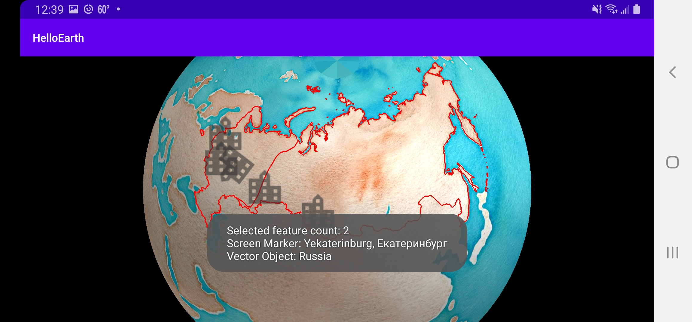

Screen Marker Selection
Tutorial by Nicholas Hallahan.
Screen marker selection is similar to vector selection. Markers, however, are treated as an annotation to the map. Markers are added to the map to annotate a location with an icon, and this is done explicitly by creating a ScreenMarker object. Vector Objects, in contrast, are typically created by parsing vector formats like GeoJSON.
Make Screen Marker Selectable
As with vector selection, we need to set the marker object to be selectable. In the insertMarkers method in HelloMapFragment.java, go through each ScreenMarker and make moskow.selectable = true;.
private void insertMarkers() {
...
// Moskow - Москва
MarkerProperties properties = new MarkerProperties();
properties.city = "Moskow";
properties.subject = "Moskow";
ScreenMarker moskow = new ScreenMarker();
moskow.loc = Point2d.FromDegrees(37.616667, 55.75); // Longitude, Latitude
moskow.image = icon;
moskow.size = markerSize;
moskow.selectable = true;
moskow.userObject = properties;
markers.add(moskow);
...
}
Create userObject
You’ll notice that after we set a marker as selectable, we also assign an object to userObject. This is the main difference between marker selection and vector selection. A VectorObject has an attribute dictionary that is populated with data from the source vector data. Markers, however, are usually explicitly created. WhirlyGlobe understands this use case and lets you assign any Object you would like to userObject. When your marker is selected, you can then have a reference to your userObject and extract any data you would like.
In our tutorial, we create a very simple class called MarkerProperties. This class is defined in HelloMapFragment, and it entails the following:
public class MarkerProperties {
public String city;
public String subject;
}
As detailed above, when we create a ScreenMarker, we also create a MarkerProperties object where we assign values.
Create Gesture Delegate Method
As explained in the Vector Selection Tutorial, we create a userDidSelect delegate method. In HelloMapFragment.java, create the following method:
@Override
public void userDidSelect(MapController mapControl, SelectedObject[] selObjs,
Point2d loc, Point2d screenLoc) {
}
This method will be called whenver a vector object is selected.
Set Fragment as Gesture Delegate
We also need to notify our map controller that HelloMapFragment is the delegate that should be notified of a selection.
@Override
protected void controlHasStarted() {
...
// Set controller to be gesture delegate.
// Needed to allow selection.
mapControl.gestureDelegate = this;
...
}
Notify User of Selection
Just like in the vector selection tutorial, we are notified of a selected marker in userDidSelect. Let’s extend userDidSelect from the previous tutorial and notify the user of the MarkerProperties data found in the screen marker’s userObject.
@Override
public void userDidSelect(MapController mapControl, SelectedObject[] selObjs,
Point2d loc, Point2d screenLoc) {
String msg = "Selected feature count: " + selObjs.length;
for (SelectedObject obj : selObjs) {
// GeoJSON
if (obj.selObj instanceof VectorObject) {
VectorObject vectorObject = (VectorObject) obj.selObj;
AttrDictionary attributes = vectorObject.getAttributes();
String adminName = attributes.getString("ADMIN");
msg += "\nVector Object: " + adminName;
}
// Screen Marker
else if (obj.selObj instanceof ScreenMarker) {
ScreenMarker screenMarker = (ScreenMarker) obj.selObj;
MarkerProperties properties = (MarkerProperties) screenMarker.userObject;
msg += "\nScreen Marker: " + properties.city + ", " + properties.subject;
}
}
Toast.makeText(getActivity(), msg, Toast.LENGTH_LONG).show();
}

Notice that when you tap on a marker, two geographic features are selected. That is because the marker is on top of the Russia GeoJSON polygon. When a user taps on a map or globe, all of the features that intersect with the tap are selected. You are then given an array of the selected objects from what you can do as you choose.
Draw Marker as Selected
We might want to draw a new icon for a marker to show that it has been selected. Though slightly contrived, we’re going to replace the city icon with the app’s launcher icon. You can use this technique to replace your icons with something else when selected.
Create the following method in HelloMapFragment:
public void drawScreenMarkerAsSelected(ScreenMarker screenMarker) {
if (selectedMarkerComponent != null) {
mapControl.removeObject(selectedMarkerComponent, MaplyBaseController.ThreadMode.ThreadAny);
}
MarkerInfo markerInfo = new MarkerInfo();
markerInfo.setDrawPriority(Integer.MAX_VALUE);
Bitmap icon = BitmapFactory.decodeResource(getActivity().getResources(), R.drawable.maply_ic_launcher);
Point2d markerSize = new Point2d(200, 200);
screenMarker.image = icon;
screenMarker.size = markerSize;
screenMarker.selectable = true;
selectedMarkerComponent= mapControl.addScreenMarker(screenMarker, markerInfo, MaplyBaseController.ThreadMode.ThreadAny);
}
This method is to be called in userDidSelect when we are handling a selected ScreenMarker.
// Screen Marker
else if (obj.selObj instanceof ScreenMarker) {
ScreenMarker screenMarker = (ScreenMarker) obj.selObj;
MarkerProperties properties = (MarkerProperties) screenMarker.userObject;
msg += "\nScreen Marker: " + properties.city + ", " + properties.subject;
drawScreenMarkerAsSelected(screenMarker);
}
We also need to have a class member ComponentObject selectedMarkerComponent; to keep track of previously selected markers.
That’s it, you now have the tools you need to select and get notified of selected screen markers in WhirlyGlobe–Maply!